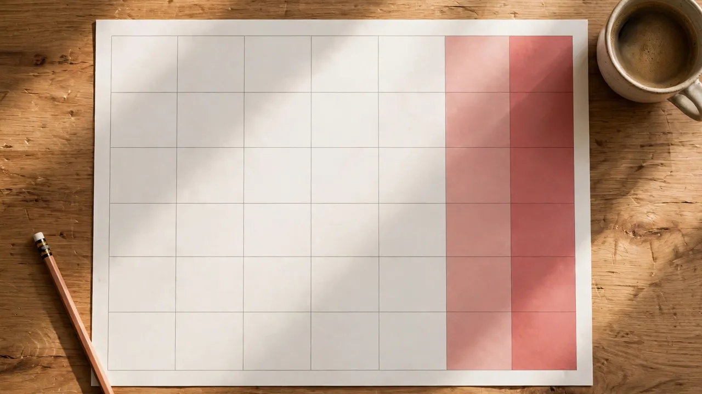

Quick answer
Count every Saturday and Sunday between your start date and your chosen as-of date, with the start date included and the as-of date excluded. That is the rule this site’s Weekends Lived Calculator uses, and it is the rule used for every number in this guide. A “full weekend” is stricter: a Saturday whose following Sunday is also inside the interval, so a Saturday cut off by the as-of date counts as a weekend day but not as a full weekend.
The long-run answer is simple arithmetic: 2 days in 7 is 28.57% of any long interval. A 30-year-old born on 1 January 2000 has lived 3,132 weekend days (1,566 full weekends) by age 30; by age 50 the same person reaches 5,218 weekend days (2,609 full weekends); by age 80, 8,350 weekend days (4,175 full weekends). Short intervals wobble around 28.57% because a single week can hold zero, one or two weekend days — long intervals converge on it.

What counts: the rule behind every number
A weekend day here means one calendar Saturday or Sunday, nothing more and nothing less. A Saturday you worked still counts, because the count is about the calendar, not about time off. A Monday bank holiday does not count, because it is a weekday however restful it felt. Only whole calendar days count: a Saturday-afternoon birth still counts that Saturday as one full weekend day, and the as-of date never counts, even if it is itself a Saturday or Sunday.
The interval is [start, as-of): the start date counts if it is a weekend day, the as-of date does not. That convention is what makes the count reproducible — two people counting the same interval get the same answer — and it is why a weekend birthday counts as your first weekend day. It also explains the one case that surprises people: if your as-of date is a Sunday, the Saturday before it is a weekend day but the pair is not a full weekend, because the Sunday itself falls outside the interval.
The calculator’s engine walks the interval day by day in UTC, counting Saturdays and Sundays, and was verified against hand-computed cases (single Saturdays and Sundays, one-week intervals, the as-of boundary, reversed dates) and against an independent full-weeks-plus-remainder formula on 500 random intervals, all matching exactly. The worked examples in this guide were computed by the same engine, so the guide and the calculator cannot drift apart.
How many weekend days are there in a year?
Usually 104: 52 Saturdays and 52 Sundays. A year has 105 weekend days when its extra day — the 366th day of a leap year, or the day that makes a 53-week year — falls on a weekend. And a leap year that starts on a Saturday, like 2028, has 106: 53 Saturdays and 53 Sundays. The year 2026 has 104 weekend days (52 Saturdays, 52 Sundays), 2027 also has 104, and 2029 has 104 again — 2028 is the outlier in this run of years, not the norm.
The same logic explains why the count for a whole life is so regular. Every complete week contributes exactly two weekend days, so the only variation comes from the partial weeks at the ends of the interval and from leap days. That is why a 100-year interval gives 10,436 weekend days at 28.57%: 100 years hold 5,218 complete weeks, give or take the leap-day edges, and 5,218 times 2 is 10,436.
If you want a quick estimate without a calculator, multiply total days by 2 and divide by 7. For a 10,000-day life that gives about 2,857 weekend days — close, but the exact count depends on which weekdays the interval starts and ends on, which is exactly what the calculator resolves.
The lifetime table: weekends at every age
For a person born on 1 January 2000, the milestones are strikingly even, because that birthday sits at the start of a week-friendly stretch of calendar: 1,044 weekend days by age 10 (522 full weekends), 2,088 by age 20 (1,044 full weekends), 3,132 by age 30 (1,566 full weekends), 4,175 by age 40 (2,087 full weekends — one short of the pattern, because the 40th birthday itself cuts a pair), 5,218 by age 50 (2,609 full weekends), and 8,350 by age 80 (4,175 full weekends).
A 40-year working life tells the same story from the other end: 40 calendar years hold about 4,175 weekend days, or roughly 2,087 full weekends. That is the pool of weekends a career contains, before holidays, shift patterns or personal choices enter the picture — the calendar total, not the time-off total, which is a different and smaller number for most people.
The table also shows why “how many weekends have I lived?” feels different from “how many days have I lived?” Days accumulate invisibly; weekends are the unit people actually remember, because they are when most of the memorable things happen. The count turns an abstract age into a number of Saturdays and Sundays, which is why it lands harder than the same life expressed in days.
How the weekend was won: from half-holiday to two days
The weekend is younger than most people assume. The present-day concept of a longer “week-end” first arose in the industrial north of Britain in the early 19th century, as a voluntary arrangement giving factory workers Saturday afternoon off from two o’clock, in exchange for turning up sober and refreshed on Monday morning — the “Saint Monday” problem, where workers spent Sunday drinking and skipped Monday to recover. The Oxford English Dictionary traces the first use of the word “weekend” to the British magazine Notes and Queries in 1879.
In the United States the two-day weekend came through religious accommodation as much as through labour campaigning. In 1908 a New England cotton mill instituted the first five-day workweek in the US so that Jewish workers would not have to work on the Sabbath from sundown Friday to sundown Saturday, while Sunday was already widely observed as a day of rest. Closing on both days satisfied both groups, and the arrangement spread.
Henry Ford made it industrial policy in 1926, shutting his automotive factories for all of Saturday and Sunday — factory workers from 1 May 1926, office employees from 1 August — on six days’ pay for five days’ work. Ford’s stated reasoning was that rested workers produced at least as much in 40 hours as in 48, and that workers with leisure time became consumers of the very goods industry produced. The two-day weekend became nationwide in the US only in 1940, when a provision of the 1938 Fair Labor Standards Act mandating a maximum 40-hour workweek went into effect.
The weekend is not Saturday–Sunday everywhere
This guide and calculator use the Saturday–Sunday weekend everywhere and say so, but the world is not uniform. Several countries observe Friday and Saturday as the official weekend, with the working week running Sunday to Thursday: Saudi Arabia, which changed from a Thursday–Friday weekend in June 2013 to align with international markets; Qatar, reaffirmed under Amiri Decision No. 57 of 2025; and Bangladesh, where government offices follow Sunday to Thursday with Friday and Saturday as weekly holidays. Friday’s place in the break reflects Jumu’ah, the congregational prayer, in Muslim-majority countries.
There are also split and extended patterns. Brunei’s government employees generally work Monday to Thursday and again on Saturday, with Friday and Sunday as their weekly days off — a break split across the week, not a consecutive pair. In the United Arab Emirates, federal government employees follow a Saturday–Sunday weekend, while Sharjah’s government employees work Monday to Thursday and get Friday, Saturday and Sunday off, a three-day weekend in effect since January 2022.
And in several Muslim-majority countries that do follow Saturday–Sunday — Indonesia, Lebanon, Turkey, Tunisia and Morocco among them — Friday remains a working day with a long midday break for worship. The practical lesson for anyone counting weekends across borders is to state the convention first: a “weekend” count without a named pair of days is ambiguous, and a Friday–Saturday count for the same interval gives the same total only by coincidence, not by construction.
Why the share is always about 28.6%
Two days in seven is 28.571…%, and every long interval in this guide lands on 28.6% when rounded to one decimal place: 2,800 weekend days out of 9,796 total days for the 2000 birth, 3,274 out of 11,457 for a 15 June 1995 birth, 1,735 out of 6,071 for a 14 March 2010 birth. The share is a property of the week, not of the person — no birth date earns a higher long-run weekend share than any other.
Short intervals are the exception that proves the rule. A single week can be 0%, 14.3% or 28.6% weekend depending on where it starts; a single month wobbles by a few percentage points. The wobble shrinks as the interval grows, because the partial weeks at the ends become a smaller fraction of the whole. By a year the share is already 28.5% or 29.0% (2028’s 106 weekend days give 29.0%), and by a decade it is 28.6% to the first decimal for almost every start date.
That convergence is also a check on any weekend count you are given: if a long interval claims a weekend share far from 28.6% under a Saturday–Sunday convention, something is wrong — a holiday adjustment, a different weekend pair, or an inclusive/exclusive boundary slip. The calculator’s share, shown to one decimal place, is that check built in.
Worked examples: three lives, counted
Born 1 January 2000, counted to 27 October 2026: 9,796 total days, 1,400 Saturdays and 1,400 Sundays, 2,800 weekend days, 1,400 full weekends, weekend share 28.6%. The equal Saturday/Sunday split is not a rule — it is what this particular interval happens to give — but the total is exact under the [start, as-of) convention.
Born 15 June 1995, counted to the same date: 11,457 total days, 1,637 Saturdays and 1,637 Sundays, 3,274 weekend days, 1,637 full weekends, 28.6%. Born 14 March 2010, counted to the same date: 6,071 total days, 867 Saturdays and 868 Sundays, 1,735 weekend days, 867 full weekends, 28.6%. The one-Sunday excess in the third example is the kind of edge the day-by-day engine catches and a rough 2/7 estimate misses.
The same method works for any interval, not only a life: a job, a marriage, a project, a period of study. Enter the start date and the as-of date, and the calculator returns the same five outputs — weekend days, the Saturday/Sunday split, full weekends, weekend share, and days until the next Saturday — for whatever period you chose. The count is for the interval, not for the person.
Making the count useful
Three habits make a weekend count useful rather than merely curious. First, name the convention: Saturday–Sunday, [start, as-of), whole days only, holidays not counted. Without those four choices stated, two counts of the same life can differ by days and both look plausible. Second, count the interval you actually mean: a working life, a relationship, a time in a place — the calculator accepts any start date, so the interesting count is often not “since birth” but “since the thing began”.
Third, keep the calendar total and the time-off total separate. The weekend count is a calendar fact: how many Saturdays and Sundays fell in the interval. How many of them you were actually free is a different question, shaped by shift work, holidays, caring duties and personal choices, and no calendar calculator can answer it. Confusing the two is the most common misreading of a weekends-lived number — the calendar gave you 1,400 weekends, but it does not claim you spent all of them at leisure.
For a single interval, the fastest route is the Weekends Lived Calculator on this site: two dates in, weekend days, split, full weekends, share and next Saturday out. For the longer view, the lifetime table above covers every age most people will ask about, and the 2/7 rule covers every estimate in between.
Related calculators
Use the Weekends Lived Calculator for the weekend view of any interval, the weeks-between calculator for its complete-week structure, and the business-days calculator for the weekday remainder.
Frequently asked questions
How many weekends have I lived?
Enter your date of birth and an as-of date in the Weekends Lived Calculator: it counts every Saturday and Sunday in the interval, with the start date included and the as-of date excluded. As a rough estimate, multiply your total days lived by 2 and divide by 7 — a 10,000-day life holds about 2,857 weekend days, though the exact count depends on the weekdays at the ends of the interval.
What counts as a weekend day?
One calendar Saturday or Sunday inside your interval. A Saturday you worked still counts, because the count is about the calendar, not about time off. Only whole calendar days count, and the as-of date never counts even if it is a weekend day.
What is a full weekend?
A Saturday whose following Sunday is also inside your interval. A Saturday cut off by the as-of date counts as a weekend day but not as a full weekend — for example, if your as-of date is a Sunday, the Saturday before it is a weekend day but the pair is not complete.
How many weekend days are there in a year?
Usually 104: 52 Saturdays and 52 Sundays. A year has 105 when its extra day falls on a weekend, and a leap year starting on a Saturday, like 2028, has 106 — 53 Saturdays and 53 Sundays.
Why is the weekend share always about 28.6%?
Because two days in seven are weekend days, and 2 divided by 7 is 28.57%. Short intervals wobble around it because a single week can hold zero, one or two weekend days; long intervals converge on 28.6% to one decimal place.
Do public holidays count as weekends?
No. The calculator counts calendar Saturdays and Sundays only. A Monday bank holiday is a weekday in this count, even if you had the day off, and a Saturday you worked still counts.
What about countries where the weekend is Friday and Saturday?
This calculator uses the Saturday–Sunday weekend everywhere and says so; it does not adjust for local weekend conventions. Saudi Arabia, Qatar and Bangladesh observe Friday–Saturday weekends, and Brunei splits its break across Friday and Sunday, so a count for those conventions would differ.
Does my birth day count if it was a weekend?
Yes, if it was a Saturday or Sunday. The interval includes the start date and excludes the as-of date, so a weekend birthday counts as your first weekend day.
Can I count weekends between two dates that are not my birth?
Yes. Enter any start date, not only a birth date — the count is for the interval you choose, so it works for a job, a marriage, a project or any other period.
Why is the weekend Saturday and Sunday?
The two-day weekend grew out of 19th-century British factory practice (the Saturday half-holiday), a 1908 New England mill accommodating the Saturday Sabbath, Henry Ford’s five-day, 40-hour week in 1926, and the US 40-hour week going nationwide in 1940 under the Fair Labor Standards Act. The word “weekend” itself is first traced to 1879.